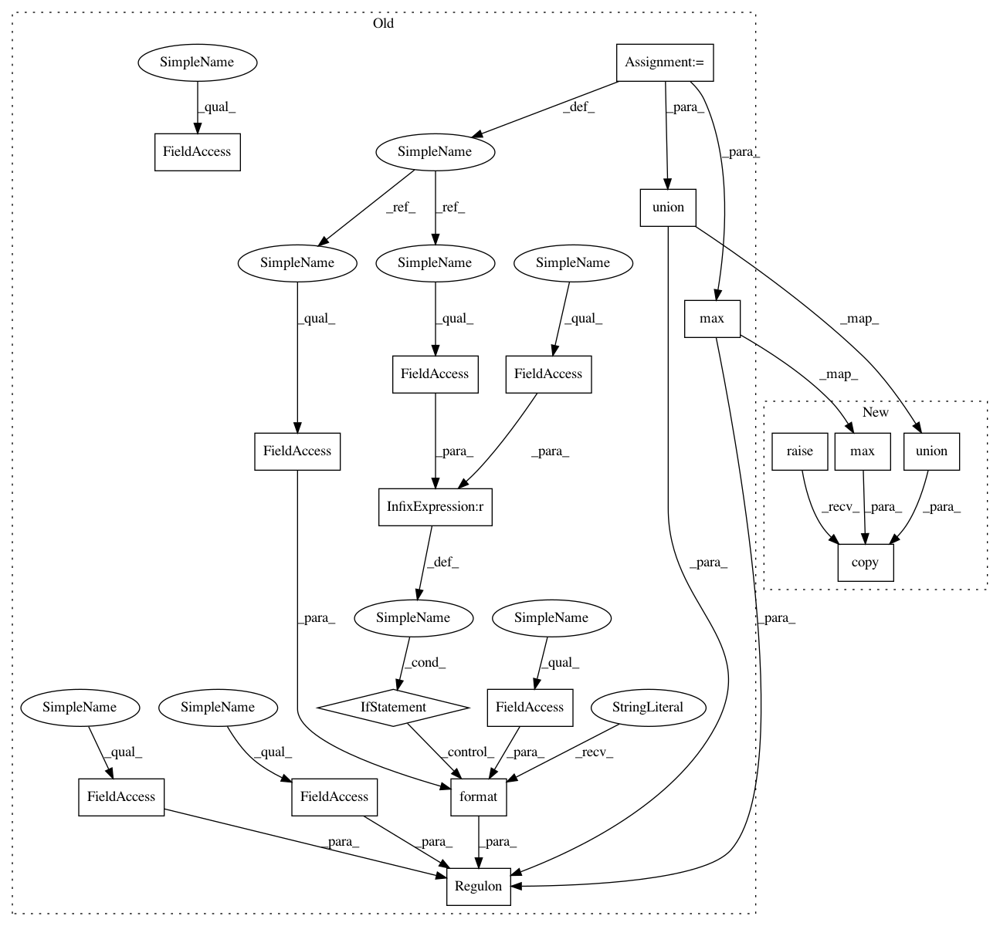

123e51b8a8708cf105eb0f0c8f268d1e087e712e,src/pyscenic/genesig.py,Regulon,union,#Regulon#Any#,335
Before Change
def union(self, other: Type["GeneSignature"]) -> "Regulon":
assert self.nomenclature == other.nomenclature, "Union of gene signatures is only possible when both signatures use same nomenclature for genes."
assert self.transcription_factor == getattr(other, "transcription_factor", self.transcription_factor), "Union of two regulons is only possible when same factor."
return Regulon(name="({} | {})".format(self.name, other.name) if self.name != other.name else self.name,
nomenclature=self.nomenclature,
transcription_factor=self.transcription_factor,
context=self.context.union(getattr(other, "context", frozenset())),
score=max(self.score, getattr(other, "score", 0.0)),
gene2weight=self._union_impl(other))
def difference(self, other: Type["GeneSignature"]) -> "Regulon":
assert self.nomenclature == other.nomenclature, "Difference of gene signatures is only possible when both signatures use same nomenclature for genes."
After Change
assert self.transcription_factor == getattr(other, "transcription_factor", self.transcription_factor), \
"Union of two regulons is only possible when same factor."
// noinspection PyTypeChecker
return super().union(other).copy(
context=self.context.union(getattr(other, "context", frozenset())),
score=max(self.score, getattr(other, "score", 0.0)))
def difference(self, other: Type["GeneSignature"]) -> "Regulon":
assert self.transcription_factor == getattr(other, "transcription_factor", self.transcription_factor), \
"Difference of two regulons is only possible when same factor."
In pattern: SUPERPATTERN
Frequency: 3
Non-data size: 18
Instances
Project Name: aertslab/pySCENIC
Commit Name: 123e51b8a8708cf105eb0f0c8f268d1e087e712e
Time: 2018-04-19
Author: vandesande.bram@gmail.com
File Name: src/pyscenic/genesig.py
Class Name: Regulon
Method Name: union
Project Name: aertslab/pySCENIC
Commit Name: 123e51b8a8708cf105eb0f0c8f268d1e087e712e
Time: 2018-04-19
Author: vandesande.bram@gmail.com
File Name: src/pyscenic/genesig.py
Class Name: Regulon
Method Name: intersection
Project Name: aertslab/pySCENIC
Commit Name: 123e51b8a8708cf105eb0f0c8f268d1e087e712e
Time: 2018-04-19
Author: vandesande.bram@gmail.com
File Name: src/pyscenic/genesig.py
Class Name: Regulon
Method Name: difference